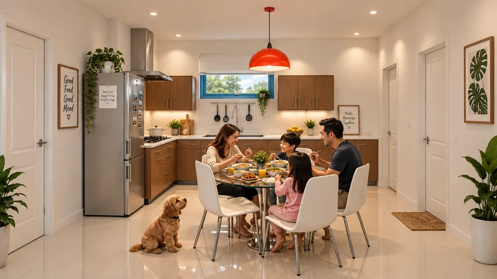
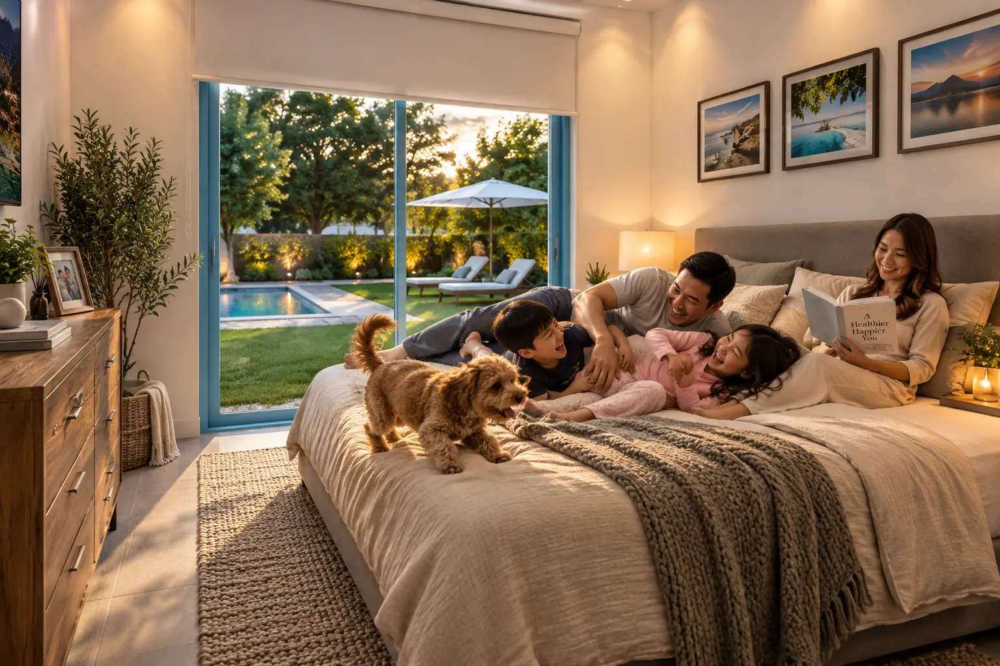
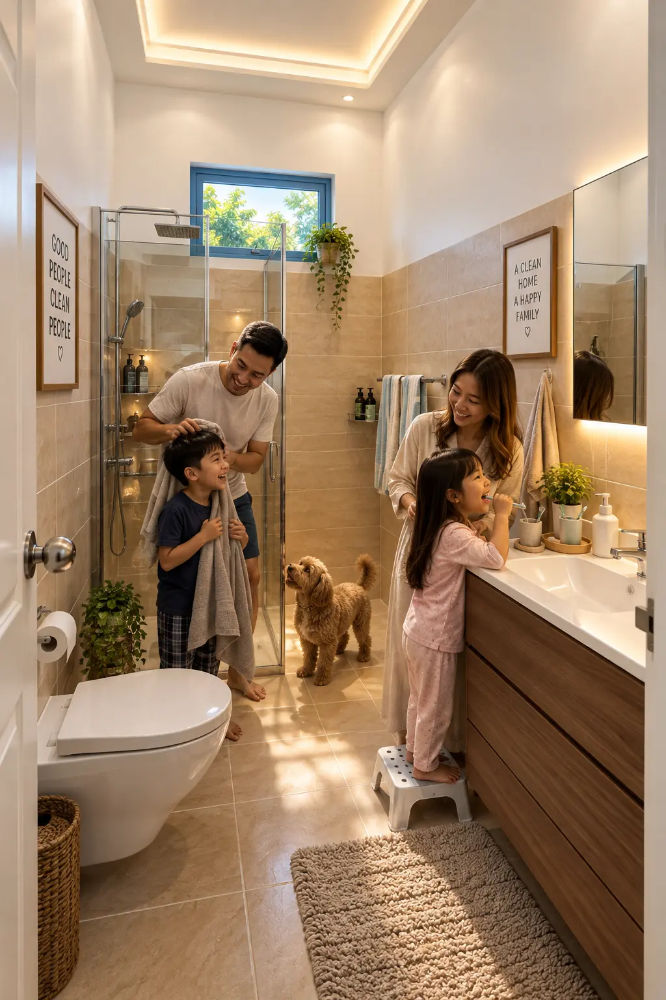
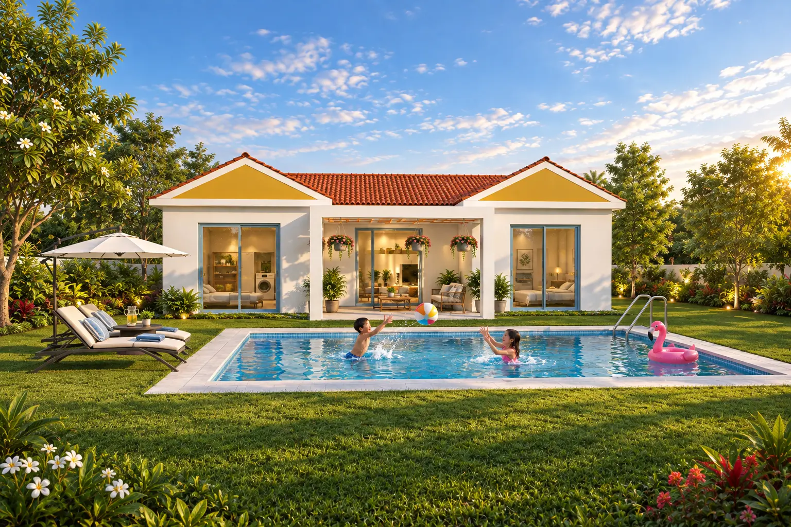

CONSIGNED VISUALIZATION · 2018
Single-Storey
Villa
A client-supplied plan translated into a complete visual narrative connecting the compact residence, garden and pool.

SCOPE
Space-planning interpretation, interior mood, material character, lighting and exterior visualization were developed as one coherent home rather than isolated room views.



